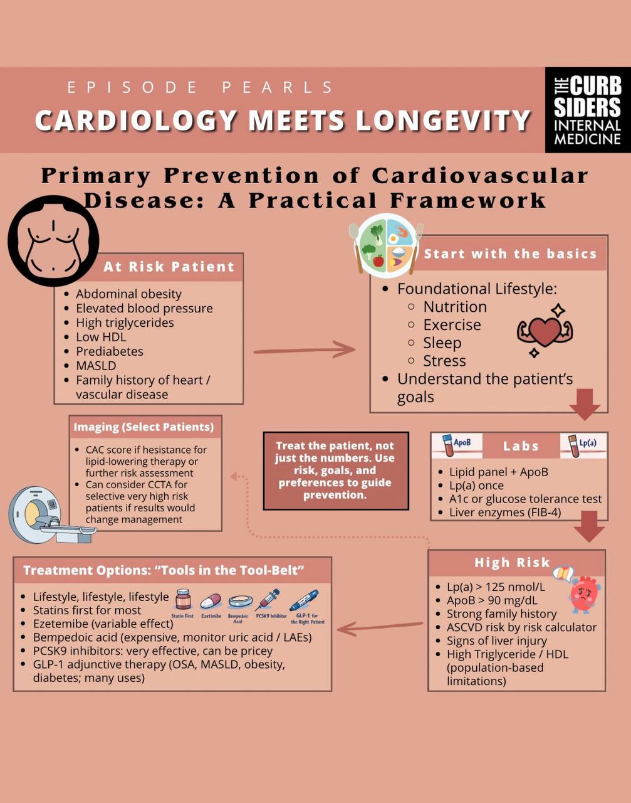
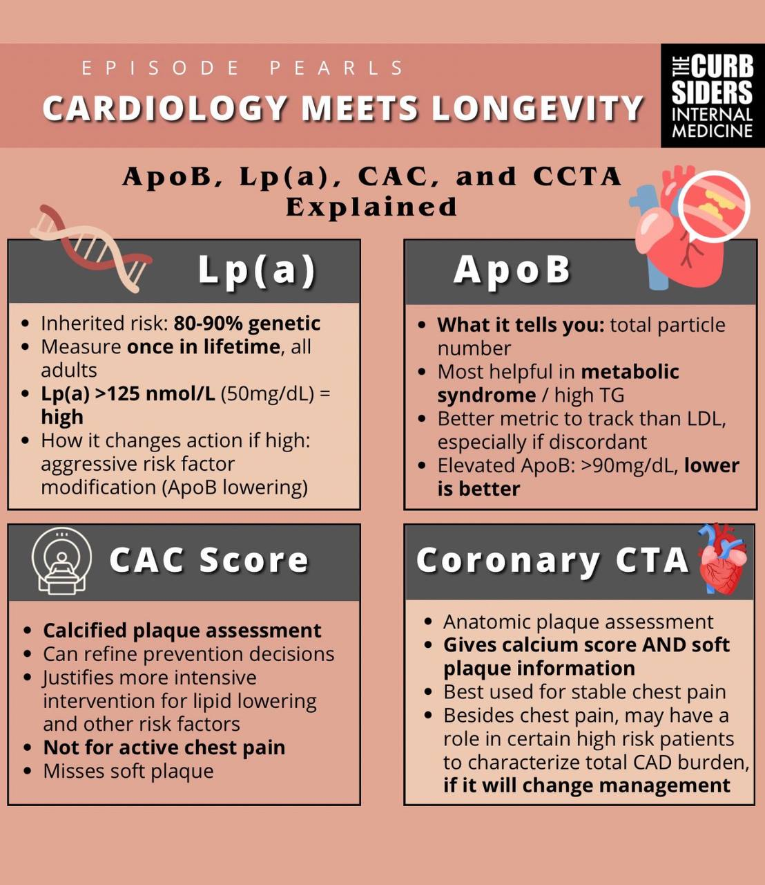

AI-Powered Heart Health, Optimized Care, Extended Life
Explore how digital health agents and precision medicine are transforming heart failure management and cardiac longevity.
Therapeutic inertia in heart failure is not a knowledge problem — it's a workflow, capacity, and between-visit problem. Digital-enabled, team-based care closes these gaps.
Therapeutic Inertia: Only 25% of HFrEF patients receive all 4 foundational therapies at guideline-recommended doses.
Digital Workflow: Remote monitoring + asynchronous team coordination enables medication optimization between clinic visits.
Clinical Impact: VITAL-HF showed 6-month improvement in medication optimization scores across all 4 drug classes.
Expert-curated infographics from The Curbsiders on practical cardiology frameworks and biomarker interpretation.

Primary Prevention of Cardiovascular Disease: A Practical Framework
From The Curbsiders: Cardiology Meets Longevity

ApoB, Lp(a), CAC, and CCTA Explained
From The Curbsiders: Cardiology Meets Longevity
AI that listens passively to clinical encounters and auto-generates documentation — reducing clinician burden.
AI agents seamlessly integrated with EHRs, wearables, and patient apps for continuous data flow.
LLM-powered agents providing in-the-moment clinical guidance and medication optimization recommendations.
AI analyzing genomic + clinical + wearable data to tailor therapy selection for individual patients.
AI coordinating workflows between cardiologists, RNs, pharmacists, and care teams asynchronously.
AI-powered dashboards identifying at-risk patients, tracking quality metrics, and optimizing outcomes at scale.
We're building the digital-first heart failure management platform that solves therapeutic inertia through AI-enabled workflows, team coordination, and asynchronous care.
Remote vital sign monitoring + medication optimization scoring + team-based care coordination = better outcomes, fewer hospitalizations, extended cardiac longevity.
Patient tracking of heart rate, weight, and blood pressure with real-time dashboard.
Medication management, guideline-based alerts, and team workflows for medication titration.
LLM-powered assistant providing clinical decision support, predictive alerts, and autonomous care coordination.